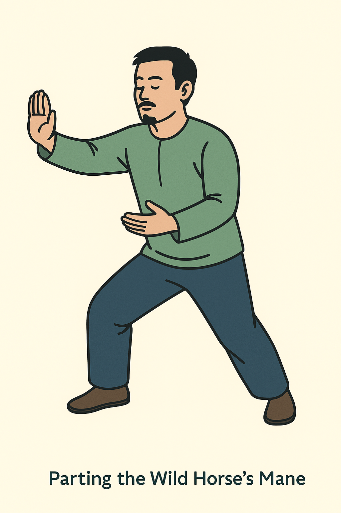
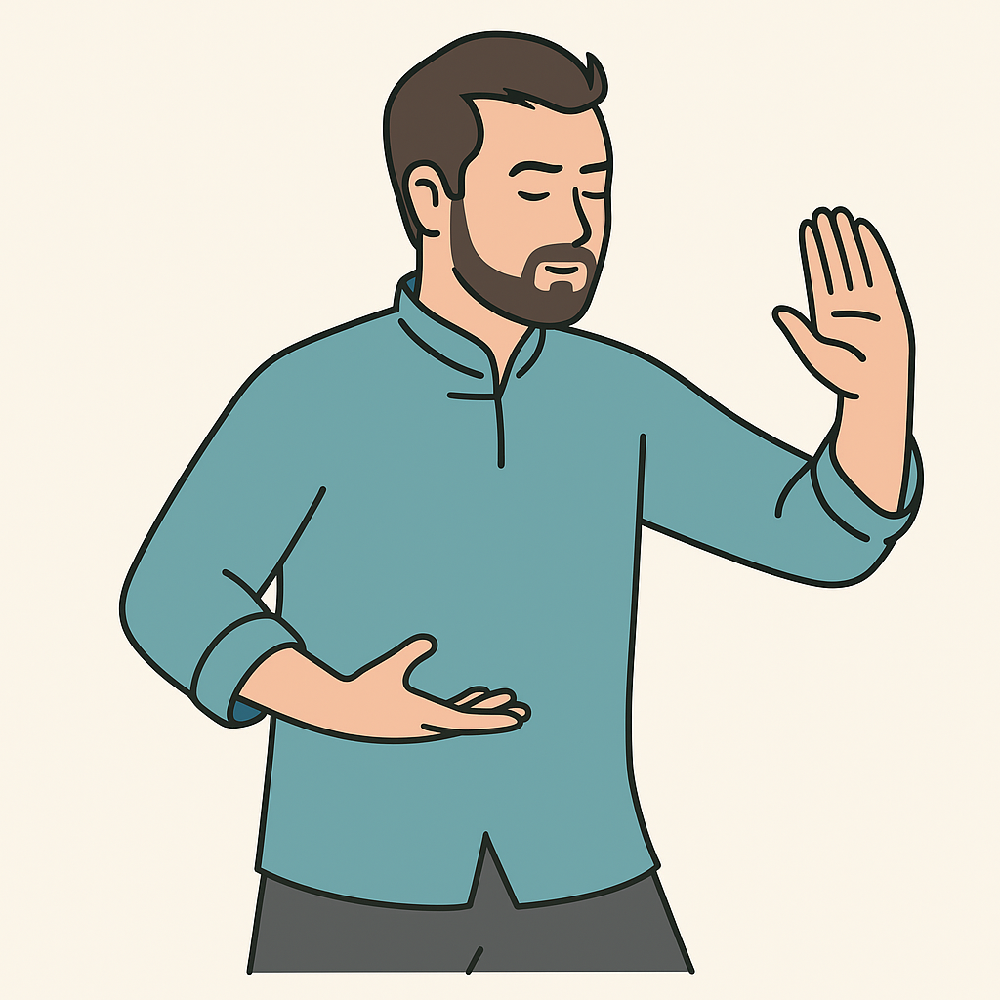

Commencing → Parting the Wild Horse’s Mane → Wave Hands Like Clouds. Full-body then mid-body views.
Print / Save as PDFCommencing Form — full-body stance and posture.Commencing Form — mid-body view (arm path, breathing focus).

Parting the Wild Horse’s Mane — full-body stance and step.

Parting the Wild Horse’s Mane — mid-body (hand flow, torso turn).Wave Hands Like Clouds — stepping and weight shift.Wave Hands Like Clouds — circular hand path and torso rotation.
Tip: If any image looks out of order here, the filename in /sites/img/ is the one to rename. This page prints exactly as shown.